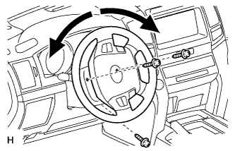
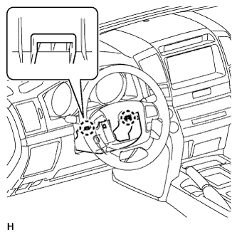
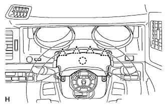
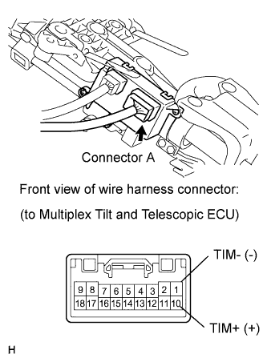
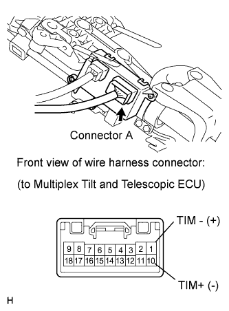
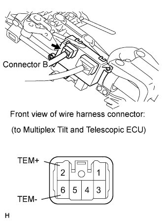
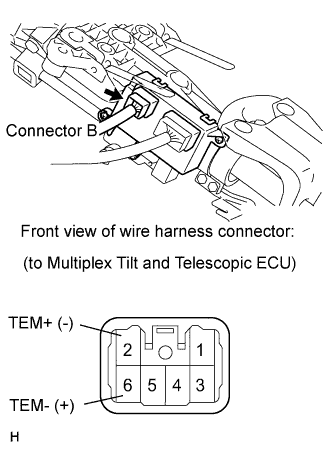

STEERING COLUMN ASSEMBLY (for Power Tilt and Power Telescopic Steering Column) > ON-VEHICLE INSPECTION |
| 1. DISCONNECT CABLE FROM NEGATIVE BATTERY TERMINAL |
| 2. REMOVE LOWER STEERING COLUMN COVER |
 |
Remove the 3 screws.
 |
Detach the 2 claws to remove the lower steering column cover.
| 3. REMOVE UPPER STEERING COLUMN COVER |
 |
Detach the 4 clips.
Detach the claw to remove the upper steering column cover.
| 4. REMOVE DRIVER SIDE KNEE AIRBAG ASSEMBLY |
Remove the driver side knee airbag assembly (Click here).
| 5. INSPECT TILT MOTOR |
Inspect the tilt motor.
Disconnect connector A from the multiplex tilt and telescopic ECU.
 |
Apply battery voltage to the tilt motor connector, and check the steering wheel tilt operation.
| Measurement Condition | Specified Condition |
| Battery positive (+) → Terminal 10 (TIM+) Battery negative (-) → Terminal 1(TIM-) | Steering wheel tilts up |
 |
Apply battery voltage to the tilt motor connector, and check the steering wheel tilt operation.
| Measurement Condition | Specified Condition |
| Battery positive (+) → Terminal 1 (TIM-) Battery negative (-) → Terminal 10 (TIM+) | Steering wheel tilts down |
| 6. INSPECT TELESCOPIC MOTOR |
Inspect the telescopic motor.
Disconnect connector B from the multiplex tilt and telescopic ECU.
 |
Apply battery voltage to the telescopic motor connector, and check the steering column operation.
| Measurement Condition | Specified Condition |
| Battery positive (+) → Terminal 2 (TEM+) Battery negative (-)→ Terminal 6 (TEM-) | Steering column contracts |
 |
Apply battery voltage to the telescopic motor connector, and check the steering column operation.
| Measurement Condition | Specified Condition |
| Battery positive (+) → Terminal 6 (TEM-) Battery negative (-) → Terminal 2 (TEM+) | Steering column extends |
| 7. INSTALL DRIVER SIDE KNEE AIRBAG ASSEMBLY |
Install driver side knee airbag assembly (Click here).
| 8. INSTALL LOWER STEERING COLUMN COVER |
Attach the 2 claws to install the lower steering column cover.
| 9. INSTALL UPPER STEERING COLUMN COVER |
Attach the claw to install the upper steering column cover.
Attach the 4 clips to install the upper steering cover onto the instrument panel cluster finish panel.
Install the 3 screws.
| 10. INSPECT SRS WARNING LIGHT |
Inspect the SRS warning light (Click here).
| 11. CONNECT CABLE TO NEGATIVE BATTERY TERMINAL |